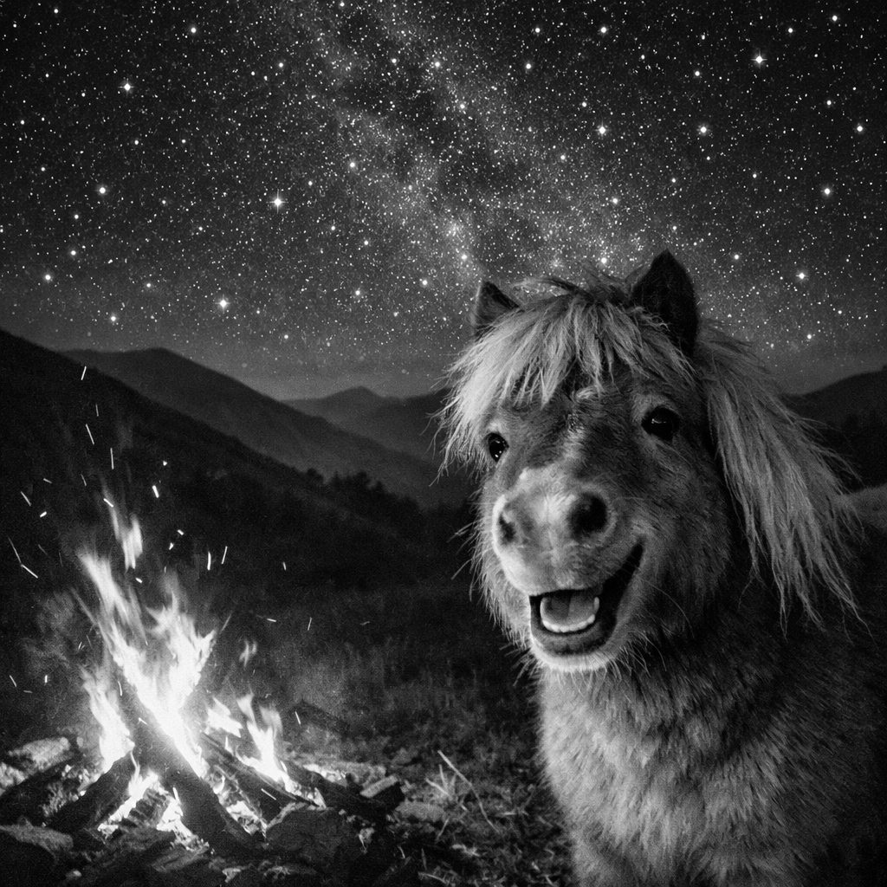

tonythepony.co.uk
Tony
the Pony

A small horse. A big fire. Enormous plans.
This is a test paddock — pages will appear here as they get built. Mind the fence.
In the stable so far: Is it my job? flowchart · Interface template letters · ES quick calculator